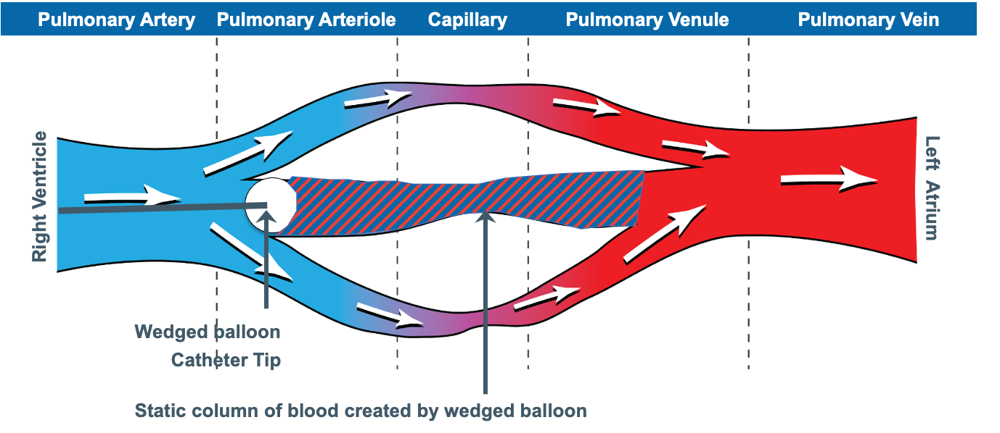
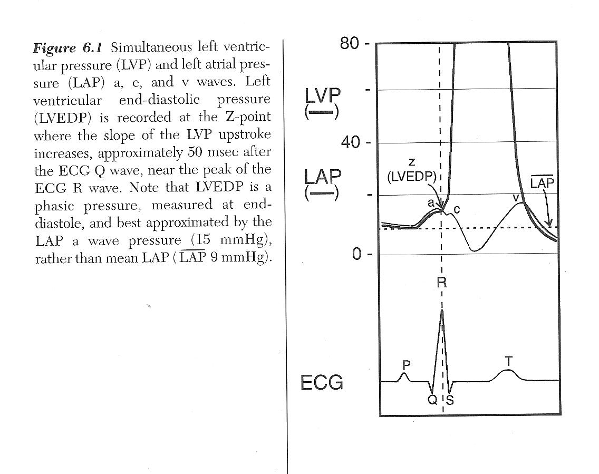
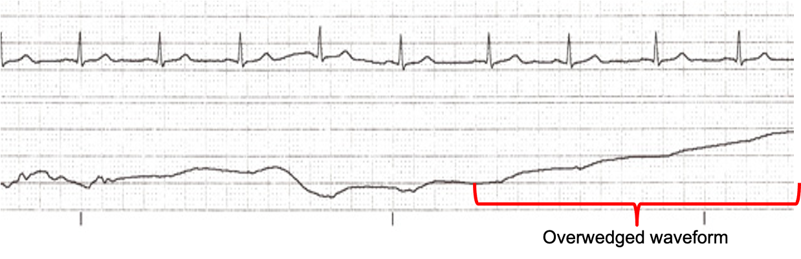

Module I15
PA catheter interpretation beyond the Novice basics
Module N7 and its four topic pages taught the catheter as a procedure. What the lumens do, how to zero and level the transducer, how to read depth against waveform from right atrium to right ventricle to pulmonary artery to wedge, how long the balloon may stay up and why. All of that is assumed here. This module begins one step later, at the moment the balloon is inflated, a venous-looking trace has replaced the pulmonary artery trace, and somebody has to decide what the number means.
That decision is the harder half. A wedge pressure is not a measurement of anything a clinician wants to know. What is wanted is the filling of the left ventricle. What is measured is a pressure in an occluded branch of the pulmonary artery, one capillary bed away, arrived at through a saline column, a balloon, and a set of conditions in the lung that nobody has verified. Between the two sits a chain of separate assumptions, each independently true or false in a given patient, each failing for a different reason, and some of them failing in opposite directions. The number on the screen carries no information about which of them are holding.
The Core skill is therefore not reading the wedge but knowing, for this patient, which links in the chain are intact. This module takes the chain apart, then works through the four situations in which the trace itself announces that the measurement has failed: the tip that has left West zone 3, the giant v wave, the overwedged catheter and the partially occluded one. It closes with the pulmonary artery diastolic pressure, the surrogate that lets you stop wedging, and the conditions under which it holds.
What the balloon actually measures
Swan and colleagues introduced the balloon-tipped, flow-directed catheter that makes this possible in 1970. Inflating the balloon stops flow in the branch it occludes. That single fact is the whole basis of the measurement, and its consequence follows from the resistance equation in the form used throughout this pathway. Across any vascular segment, the pressure drop is the product of flow and resistance. Set the flow to zero and the pressure drop goes to zero with it, no matter how large the resistance is.
What the tip now sees is a continuous, motionless column of blood running forward from the balloon, through the arteriole, across the capillary bed and into the pulmonary venule. That column behaves as a hydraulic extension of the fluid-filled catheter itself. Pressure changes generated in the left atrium travel backward along it and arrive at the transducer.

Notice where the column ends. It ends not at the left atrium but at the junction point, the place where the occluded vessel rejoins blood that is still moving. Everything upstream of that point is at one pressure. Everything downstream is subject to the ordinary pressure drops of a flowing circulation. The wedge therefore reports the pressure in a pulmonary vein of roughly the same calibre as the artery that was occluded, and it equals left atrial pressure only to the extent that there is no meaningful resistance between that vein and the atrium.
Two consequences follow, and both are easy to miss.
The wedge is not the capillary pressure. The pressure that drives fluid across the pulmonary capillary wall lies upstream of the junction point, higher than the wedge by the drop across the pulmonary venous resistance. Cope and colleagues, reading effective capillary pressure off the inflection between the fast and slow components of the post-occlusion decay curve, showed in dogs that agents acting on postcapillary resistance raise it substantially while leaving the wedge unchanged. A wedge of 12 is therefore compatible with a capillary pressure well above the threshold for oedema formation. The Starling forces belong to Module I7. What matters here is that the wedge sits on the wrong side of them.
The size of the occluded vessel changes the answer. A balloon occluding a large branch puts the junction point in a large pulmonary vein. Impaction of a bare tip in a small vessel puts it further upstream, with more venous resistance still to cross, and reads higher.
![Two textbook panels. The upper panel contrasts a wedge obtained by balloon flotation, which occludes a large vessel and gives a pressure equal to large pulmonary vein and left atrial pressure of 10 mmHg, with a wedge obtained by catheter tip impaction, which moves the junction point upstream into smaller veins and reads 15 mmHg despite an unchanged left atrial pressure. The lower panel shows an electrocardiogram above a pulmonary artery wedge trace and a central venous trace, with the wedge showing two peaks labelled a and v and the central venous trace showing three peaks labelled a, c and v, and the wedge a wave occurring later relative to the QRS.](img/hemodynamics-module-v2022-full_slide274_ec1b05fc.jpeg)
Why the wedge trace is late, and why it has lost a wave
The lower panel of that figure carries the two features that identify a wedge trace as a wedge trace, and both follow from the route the signal has taken.
The pressure wave from left atrial contraction travels backward through the pulmonary veins, across the capillary bed and up the pulmonary arterial tree before reaching the tip, while the right atrium sits a few centimetres from the proximal port. A right atrial a wave therefore follows closely behind the P wave, while a wedge a wave is delayed until it sits within or just after the QRS. Module I3 established that electromechanical delay alone puts every pressure event 120 to 200 milliseconds behind its electrical trigger, and the wedge adds transit time on top of that. Given two unlabelled tracings, the timing against the electrocardiogram separates them faster than the pressure scale does.
The same journey costs the trace its c wave, a small sharp deflection produced by the atrioventricular valve bulging into the atrium during isovolumetric contraction. Module I3 showed that fine waveform features live in the high harmonics and that anything adding compliance to the transmission path attenuates them first. The capillary bed adds a great deal of compliance, so the c wave is damped out, the lower-frequency a and v waves survive, and the wedge presents two peaks against the right atrial trace's three. Module I14 takes the right atrial waveform in full.
The assumption chain
The claim being made when a wedge pressure is written in the chart is not one claim but five in series: the wedge equals left atrial pressure, left atrial pressure equals left ventricular end-diastolic pressure, that pressure reflects end-diastolic volume, that volume reflects preload, and preload is worth targeting. A chain is only as good as its weakest link, and a clinician who has met it only as the single equivalence wedge equals preload has no way to work out which link has failed in a particular patient.
| Link | What has to be true | What breaks it | Direction of the error |
|---|---|---|---|
| PAOP = LAP | Continuous static column from tip to a large pulmonary vein, and no resistance between that vein and the atrium | Tip outside zone 3, partial occlusion, pulmonary venous obstruction, stiff or obstructed left atrium | Both directions, and the trace usually shows which |
| LAP = LVEDP | An open, unobstructed mitral valve and no other source of left ventricular filling | Mitral stenosis, acute mitral regurgitation, aortic regurgitation, tachycardia short enough to prevent equilibration | Stenosis and regurgitation raise LAP above LVEDP, aortic regurgitation raises LVEDP above LAP |
| LVEDP reflects LVEDV | A known and stable ventricular diastolic compliance, and no external constraint | Ischaemia, hypertrophy, infiltrative disease, tamponade, pericardial constraint, ventricular interdependence from a dilated right ventricle | A stiff or constrained ventricle gives a high pressure at a normal or low volume |
| LVEDV reflects preload | Fibre stretch tracks chamber volume | Chamber geometry, wall thickness, and the fact that the pressure is intracavitary rather than transmural | Positive pleural pressure inflates the measured pressure while the true distending pressure falls |
| Preload is the target | The patient sits on the steep part of the Frank-Starling relationship | A flat cardiac function curve, where more filling buys no flow | Fluid given for a low number produces congestion with no rise in output |
The last three links are not this module's. That a filling pressure is not a filling volume, and that a filling volume is not the same question as fluid responsiveness, are argued in Module I11. That the measured pressure is referenced to atmosphere while the ventricle responds to transmural pressure closes Module I3. What follows here is the first two links, which belong to the catheter itself.
When the wedge does not equal left atrial pressure
Group the failures by direction, because the direction decides whether the error prompts a fluid bolus or a diuretic.
The wedge reads higher than left atrial pressure whenever something between the junction point and the atrium adds resistance to flow, and whenever the occlusion is incomplete. Poor left atrial compliance from radiotherapy scarring or a Cox-Maze procedure, mechanical obstruction from an atrial myxoma, and pulmonary venous obstruction from tumour, fibrosis or veno-occlusive disease all belong to the first category. They are uncommon, and they matter chiefly because they are invisible on the trace: the waveform looks normal and only the clinical context gives them away.
Partial occlusion belongs to the second category and is neither uncommon nor invisible. Leatherman and Shapiro studied fourteen patients with pulmonary hypertension in whom the gap between pulmonary artery diastolic pressure and the wedge was 10 mmHg or more, recording the wedge during partial occlusion and again after repositioning to obtain a lower and more accurate value. The error was 13 (S.D. +/- 5 mmHg), range 6 to 21. That is the difference between a diagnosis of pulmonary arterial hypertension and a diagnosis of left heart failure. The tell is relational rather than absolute: partial occlusion raises the wedge without raising the pulmonary artery diastolic pressure, so a previously wide gap between the two suddenly narrows. If the diastolic pressure has been running 15 mmHg above the wedge and today's wedge is within 2 mmHg of it, suspect the catheter rather than the physiology.
The wedge reads lower than left atrial pressure, or stops reporting it at all, when the static column is broken. That is the zone problem, and it has a section to itself below. Hypovolaemia and high intrathoracic pressure act by the same route, shrinking the region of lung in which the capillaries stay open.
When left atrial pressure does not equal left ventricular end-diastolic pressure
This link assumes that at end diastole the mitral valve is open, the chambers are in free communication, and enough time has passed for their pressures to equalise. Each clause can fail.
Mitral stenosis is the clean case: a gradient across a narrowed valve persists to the end of diastole, so left atrial pressure sits above end-diastolic pressure by that gradient, and a wedge of 24 in mitral stenosis is not evidence of a failing ventricle. Acute mitral regurgitation raises mean left atrial pressure above end-diastolic pressure because a regurgitant volume delivered during systole has to be accommodated before the valve reopens. Aortic regurgitation reverses the direction, since the ventricle keeps filling from the aorta throughout diastole, and in severe cases the mitral valve closes early so the chambers are not in communication at end diastole at all. Tachycardia shortens diastole below the time needed for equilibration, which is why a wedge taken at a heart rate of 140 deserves less confidence than the same number at 80.
The size of the resulting discrepancy is larger than most clinicians assume. Halpern and Taichman examined 11,523 patients who underwent simultaneous right and left heart catheterisation at one academic centre over nine years. Among the 3,926 with pulmonary hypertension and complete data, 580 met the haemodynamic criteria for pulmonary arterial hypertension on the strength of a wedge of 15 mmHg or less, and of those, 310, or 53.5 percent, had a directly measured left ventricular end-diastolic pressure above 15 mmHg. The wedge discriminated high from normal end-diastolic pressure moderately well, with an area under the receiver operating characteristic curve of 0.84, but calibrated poorly, with limits of agreement from minus 15.2 to plus 9.5 mmHg. Bitar and colleagues reproduced the pattern in a smaller cohort, with the worst agreement in chronic obstructive pulmonary disease and obesity.
That does not make the wedge useless. It makes it a good instrument for the question is the left ventricular filling pressure clearly high and a poor one for the question what is it. The first is usually the question being asked in an intensive care unit, which is why the wedge survives here after being abandoned as a precision measurement in the catheter laboratory. The trap is the low wedge: 12 mmHg in a breathless patient is not evidence that the left heart is innocent, and in the Halpern population it was wrong about that more often than right.
Where to read the wedge depends on the question
Even with every link in the chain intact, there remains a separate question: what pressure are we trying to measure? A wedge waveform contains more than one physiologically legitimate pressure, and they do not necessarily answer the same question. If PAWP is being used to approximate left ventricular end-diastolic pressure, the relevant value is the end-diastolic PAWP. If the question is the average pressure imposed by the left atrium on the pulmonary venous circulation over the cardiac cycle, the mean PAWP is the relevant quantity. In a normal waveform the two may be similar. With large v waves, atrial fibrillation or other marked phasic variation, they can diverge substantially. The error is therefore not using a mean pressure: it is asking a mean pressure to represent an end-diastolic event.
For an end-diastolic PAWP intended to approximate LVEDP, use the pre-c-wave pressure when it can be identified. When the c wave is not visible, the a-wave peak is used as the practical approximation of that value. Once the trace is identified, decide which pressure the question requires. If the objective is to estimate end-diastolic left ventricular filling pressure, use the end-diastolic PAWP, read at the a-wave peak, rather than allowing a giant systolic v wave to dominate the value. The mean PAWP will be higher in that setting because it incorporates the v wave, and it describes the average pressure imposed on the pulmonary venous circulation rather than LVEDP alone.

End-diastolic pressure is an instant, not an average. It is the pressure present at the end of ventricular filling, immediately before ventricular contraction begins to raise pressure. When PAWP is being used to approximate LVEDP, that is the physiologic event we want to identify. On the wedge waveform it lies immediately before the c wave. The difficulty is practical: unlike the right atrial trace developed in Module I14, the wedge signal has travelled backward through the pulmonary circulation and its higher-frequency components are attenuated, so the c wave is often difficult or impossible to see. In that setting, the peak of the a wave is read as the practical landmark for that end-diastolic value.
- In atrial fibrillation there is no a wave. Atrial contraction has been abolished, so the trace keeps its v wave and loses its a wave. Read the pressure at the point in the cycle where the a wave would have fallen, at the QRS, off the trace rather than off the mean.
- When the v wave is large, mean PAWP may substantially exceed end-diastolic PAWP. That does not make the mean pressure physiologically false. It means that it is answering a different question. The large systolic v wave raises the average pressure experienced by the pulmonary venous circulation, while the end-diastolic value remains the more appropriate comparison when PAWP is being used to approximate LVEDP. Reporting which value is being used becomes particularly important when the difference could change management.
West zones, and why a valid wedge is a fact about the lung
Everything above assumed a continuous column of blood between the tip and the left atrium. Whether that column exists is not a property of the catheter. It is a property of the region of lung the tip happens to lie in, and it can change while the catheter stays exactly where it is.
West, Dollery and Naimark established the framework in isolated perfused lungs in 1964. Alveolar pressure is essentially uniform through the lung, while pulmonary arterial and venous pressures both fall from the dependent lung toward the apex, because the pulmonary circulation is a low-pressure system in which a vertical column of blood is a significant fraction of the driving pressure. Three regimes result.
These zones are best understood as functional pressure states rather than fixed anatomical compartments. They describe the local relationship among alveolar, arterial, and venous pressures at a given point in the lung. For that reason, different regions can occupy different zones at the same time, and the transition from one zone to another is not a sharp anatomical border. Even in the same patient, and even over short distances, a unit behaving like zone 3 may lie next to another in which alveolar pressure already begins to influence intravascular pressure.
![Diagram of a lung divided into three horizontal zones with a capillary drawn in each. In zone 1 at the apex alveolar pressure exceeds arterial pressure and the capillary is closed. In zone 2 arterial pressure exceeds alveolar pressure which exceeds venous pressure, and the capillary is open at the arterial end and pinched at the venous end. In zone 3 in the dependent lung both arterial and venous pressure exceed alveolar pressure and the capillary is open. A plot to the right shows blood flow increasing with distance down the lung, with a change of slope at the zone 2 to zone 3 boundary.](img/hemodynamics-module-v2022-full_slide272_d24477c4.jpg)
In zone 1 alveolar pressure exceeds arterial pressure, the capillaries are held shut and there is no flow. In zone 2 arterial pressure exceeds alveolar pressure but alveolar pressure still exceeds venous pressure, so the vessel is pinched at its downstream end, flow is set by the arterial minus alveolar difference, and venous pressure is invisible to the upstream circulation. This is the vascular waterfall in its pulmonary form, the same Starling resistor that Module I8 analyses at the thoraco-abdominal junction. In zone 3, in the dependent lung, both arterial and venous pressures exceed alveolar pressure, the vessel stays open, and flow follows the conventional arterial minus venous gradient.
Only a region functioning as zone 3 throughout the respiratory cycle supports a valid wedge, and the reason is exact rather than approximate. A wedge requires the column to be continuous, and in zone 2 the vessel is pinched shut somewhere between the tip and the vein. The transducer is then looking at a dead end whose pressure is set by whatever is squeezing the vessel closed, which is alveolar pressure. A zone 1 or zone 2 wedge is a genuine measurement of something. It is a measurement of the ventilator rather than of the heart.
The requirement is stricter than it first appears, because the zone condition has to hold throughout the respiratory cycle, not on average. A region that is zone 3 at end expiration and zone 2 at end inspiration produces a trace contaminated for part of every cycle, worst at exactly the phase in which airway pressures are highest.
How a valid wedge becomes an invalid one
The boundaries between the zones are not anatomical lines but functional transitions set by the local crossing of alveolar, arterial, and venous pressures. The lung therefore behaves more like a patchwork of pressure conditions than a structure divided into rigid horizontal bands. A region behaving as zone 3 may sit near another where alveolar pressure is already influencing the measured intravascular pressure. These boundaries move whenever any of the three pressures changes, and two of the commonest things done to a critically ill patient move them in the same direction.
![Two side by side diagrams of a lung with horizontal zone boundaries. On the left, with adequate filling and modest airway pressure, zone 1 is a thin band at the apex, zone 2 occupies the upper third, and zone 3 occupies most of the lung, with a catheter tip lying well inside zone 3. On the right, with raised PEEP or hypovolaemia, both zone boundaries have moved downward, zone 1 now occupies the upper third, zone 2 occupies the middle, zone 3 is reduced to a thin band at the base, and the catheter tip at the same height now lies in zone 2.](img/i15-zone-conversion.svg)
Positive end-expiratory pressure raises alveolar pressure and pushes both boundaries downward. Haemorrhage and diuresis lower pulmonary arterial and venous pressure and push both boundaries downward. Do the two together, which is a routine day in a patient with the acute respiratory distress syndrome and a positive fluid balance, and zone 3 can retreat to a thin band in the most dependent lung. The catheter has not migrated. The physiology has moved past it.
This is where the standard teaching becomes actively misleading if it is left as a rule, and two studies show why.
Tip position is not reliably below the left atrium, and nobody checks. Shasby and colleagues took lateral chest radiographs in thirty consecutive open heart surgery patients and found the catheter tip within 1 cm of, or above, the level of the left atrium in 43 percent. In those patients the wedge stopped being an accurate estimate of directly measured left atrial pressure once positive end-expiratory pressure was applied, and was worst when left atrial pressure was low. Catheters below the atrium were accurate at every level of PEEP tested, and Tooker and colleagues had shown the same dependence on catheter height experimentally. Flow direction helps, since a balloon carried by blood tends to reach the high-flow dependent lung, and so does supine posture, but neither is a guarantee and only a lateral film settles it.
Lung disease can protect the measurement rather than destroy it. Teboul and colleagues measured wedge and left ventricular end-diastolic pressure simultaneously in twelve supine patients with severe acute respiratory distress syndrome at PEEP of 0, 10, and 16 to 20 cmH2O, having confirmed radiographically that every tip lay at or below the posterior border of the left atrium. The gap reached 2 mmHg or more in only six of thirty-five paired measurements, and the largest was 4 mmHg. In five patients the applied PEEP exceeded left ventricular end-diastolic pressure by 4 to 9 cmH2O, which on the simple zone model should have produced a frank zone 1 wedge, and no gradient appeared. Their explanation is the important one: in a consolidated, oedematous lung the surrounding tissue splints the vessels open and stops transmitted alveolar pressure collapsing them.
The accurate statement is therefore not that high PEEP invalidates the wedge, but that high PEEP invalidates the wedge in a lung whose vessels are collapsible and whose tip is not dependent, and both conditions are checkable. A well-aerated lung with a high tip is the dangerous combination. A stiff, wet, consolidated lung with a dependent tip is more forgiving than the teaching implies.
Reading the trace for zone failure
The pseudo-wedge announces itself, provided you know what to look for. A wedge produced by a tip in zone 1 or zone 2 is a transmitted airway pressure, and it behaves like one.
| Feature | Valid zone 3 wedge | Pseudo-wedge from zone 1 or 2 |
|---|---|---|
| a and v waves | Present and identifiable against the electrocardiogram | Absent or nearly so, the trace unnaturally smooth |
| Respiratory variation | Present but modest | Exaggerated, the dominant feature of the trace |
| Relation to PA diastolic | At or below the pulmonary artery diastolic pressure | May exceed the pulmonary artery diastolic pressure |
| Response to a change in PEEP | Changes by a small fraction of the applied change | Tracks the change in airway pressure closely |
| Response to volume removal | Falls | Rises or does not move, because zone 3 is shrinking |
The last row is the one that catches people, and it appears in this curriculum's own question bank as a case: a patient being diuresed toward a wedge target becomes 3 litres negative, and the wedge rises from 17 to 20 while the central venous pressure falls from 11 to 7. Two numbers have moved in opposite directions in response to one intervention, which is not possible if both are valid. Removing volume converted the lung around the tip from zone 3 to zone 2. The correct action is to reposition the catheter, not to give more furosemide.
Large v waves and the mitral regurgitation signature
The v wave of a left atrial trace is generated by atrial filling from the pulmonary veins during ventricular systole, while the mitral valve is shut. Its height is set by two things, the volume delivered during that period and the compliance of the atrium receiving it, and the failure to hold both in mind is what makes the giant v wave one of the most over-read findings in invasive haemodynamics.
Acute mitral regurgitation is the classic cause because it maximises both terms at once: a regurgitant volume is added to the pulmonary venous inflow, and it is delivered into an atrium that has had no time to dilate. Chronic severe mitral regurgitation of the same regurgitant fraction may produce a trivial v wave, because the atrium has remodelled over months and now accommodates the same volume with little pressure change.
Fuchs and colleagues quantified this across 1,021 consecutive catheterisations, of which 208 had both wedge tracings and angiographic assessment of the mitral valve. Grading v waves as large at 10 mmHg or more above the mean wedge, they found that of 50 patients with large v waves, 18, or 36 percent, had no or only trace mitral regurgitation: five with mitral stenosis, three with a mitral prosthesis, four with coronary disease and heart failure, two with aortic valve disease and heart failure, and two with a ventricular septal defect. Running the comparison the other way, of 37 patients with angiographically severe mitral regurgitation, only 16, or 43 percent, had large v waves, and 12, or 32 percent, had trivial ones. Mitral regurgitation is the commonest single cause of a large v wave, and a large v wave is neither sensitive nor specific for it.
The compliance term explains the false positives. Ravindran and colleagues studied fifty patients with pulmonary hypertension, deliberately excluding left ventricular dysfunction, more than mild mitral regurgitation and atrial fibrillation. Prominent v waves occurred in six, and in none of eighteen controls, and all six had post-capillary pulmonary hypertension. The v waves correlated strongly with echocardiographic markers of a stiff atrium. In a patient with no mitral regurgitation at all, the v wave was reading poor atrial compliance.

The practical difficulty is not the diagnosis but the recognition that a wedge has been obtained at all. A giant v wave restores pulsatility to a trace that is supposed to have lost it, and the result looks like a pulmonary artery tracing. Three features separate them.
- Timing. The systolic peak of a pulmonary artery trace occurs early, between the QRS and the T wave. A v wave peaks late, after the T wave. Nothing else is as reliable, which is why waveform interpretation is done with the electrocardiogram on the screen.
- Dicrotic notch. A pulmonary artery trace carries one, from pulmonic valve closure. A wedge cannot, however pulsatile, because there is no valve in the transmission path and the capillary bed would damp the notch if there were.
- End-diastolic direction. A pulmonary artery trace is still running off into the pulmonary bed as the next QRS arrives, so pressure is falling. A wedge with a large v wave has already begun its next a wave, so pressure is rising.
Overwedging, and the failures that look like data
Overwedging is a mechanical artefact with a simple cause and a dangerous consequence. Every pulmonary artery catheter distal lumen carries a slow continuous flush, typically about 3 mL per hour, to prevent clot forming at the tip. If the inflated balloon presses the tip against the vessel wall, that flush has nowhere to go. Fluid accumulates in a closed space and pressure rises, steadily and without limit, until the balloon is deflated.

Each recognition feature follows from that mechanism. A trapped tip is not in communication with a vascular bed, so the trace loses its a and v waves and becomes non-pulsatile. Fluid is being added at a constant rate to a fixed volume, so the pressure ramps upward instead of settling. And because it is not measuring a vascular pressure at all, the value bears no relation to what is upstream, which is why the classic presentation is a wedge exceeding the pulmonary artery diastolic pressure. Two further clues come from the technique: overwedging typically appears at a low balloon volume, well under the full 1.5 mL, and it can appear spontaneously hours later if the catheter has migrated distally.
A mean wedge higher than the pulmonary artery diastolic pressure has three explanations, and only one of them is physiological. The diastolic pressure has to exceed the downstream pressure it is pushing blood toward, so in the ordinary case a valid wedge sits at or below it. Two of the explanations are measurement failures: overwedging, and a tip reporting alveolar pressure from outside zone 3. The third is real. A giant v wave drags the integrated mean upward, and in acute mitral regurgitation the mean wedge can genuinely exceed the pulmonary artery diastolic pressure while every part of the measurement is working. Distinguish them from the trace rather than from the numbers: look for the v wave itself before concluding the catheter is at fault.
The management is the same sequence every time. Deflate completely and confirm that a pulmonary artery trace returns. If it does not, the catheter has migrated and is spontaneously wedged, and must be withdrawn a few centimetres until the pulmonary artery trace reappears. Never flush a wedged catheter, and never inject beyond 1.5 mL of air. Inflating a balloon that has migrated into a vessel too small for it is the mechanism of pulmonary artery rupture, which is why a wedge that appears at a progressively smaller volume is a warning and not a convenience. Then reinflate slowly, stop at the first appearance of a wedge waveform, and record the volume of air it took. That volume is longitudinal information: a wedge that now appears at 0.5 mL when it used to take 1.3 mL is a catheter that has migrated distally and should be pulled back before it wedges itself.
Two related failures deserve a sentence each. Partial occlusion is the opposite error, producing a trace that looks like a wedge but reads high, and Leatherman and Shapiro's narrowing gradient is how to catch it. Overdamping from a bubble, a clot or a kink flattens the trace into something that also lacks a and v waves and can be mistaken for either a zone problem or overwedging. The discriminator is the fast flush test, and the reasoning behind it is in Module I3. Run the flush before concluding anything about a featureless trace, because an overdamped system produces one on every channel rather than only the one you are worried about.
Reading at end expiration, and the exceptions
Module I3 established why end expiration is the usual respiratory reference for intravascular pressure measurement, and Module I14 made the underlying assumption explicit: end expiration is useful because expiration is normally passive and respiratory muscle pressure is then closest to zero. It is a physiologic reference, not an anatomical point in the respiratory cycle. When expiration becomes active, the assumption can fail, and end expiration may become precisely the point at which respiratory-muscle pressure contaminates the measurement most.
It is executed badly, by everyone. Al-Kharrat and colleagues had two specialists read 147 wedge tracings twice each, blinded, and found differences between readers spanning minus 11 to plus 12 mmHg. The variability was not explained by ventilation, but was associated with the size of the respiratory swing, and in a separate substudy in which selected tracings were shown to 23 nurses and 18 physicians, disagreement was twice as great for tracings with 8 mmHg or more of phasic variation as for tracings with less. Komadina and colleagues asked the harder question, whether experienced physicians can identify a valid wedge at all, using blood gas analysis of a sample aspirated from the wedged distal port as the objective test. Three critical care physicians working from waveform criteria alone found the thirty-eight valid tracings among sixty with accuracies of 50, 65 and 57 percent, none better than a coin toss, while agreeing on the numerical value, within 4 mmHg, 79 to 96 percent of the time. Clinicians agree on what number to read off a tracing and cannot agree on whether it should be read at all. Rizvi and colleagues tested the obvious remedy inside the ARDS Network FACTT trial: adding an airway pressure signal to 459 strip-chart recordings raised agreement within 2 mmHg from 71 to 83 percent, with the benefit concentrated in the strips with the largest swings.
It fails outright when the patient is making large respiratory efforts, and that exception inverts the usual advice. Hoyt and Leatherman studied twenty-four patients whose wedge tracings showed 15 mmHg or more of respiratory excursion from muscle activity persisting despite sedation on assist-control ventilation, recording an end-expiratory value and a mid-point value taken halfway between end expiration and the inspiratory nadir, then repeating the measurement after a muscle relaxant abolished the muscular contribution. The end-expiratory reading was 11 (S.D. +/- 5 mmHg) higher than the relaxed value. The mid-point was within 3 plus or minus 3 mmHg of it, and closer in 21 of 24 patients. The mechanism is the one Module I3 named as the first situation that breaks the convention: active expiratory contraction makes end expiration the point of highest pleural pressure rather than the lowest, so the rule picks the worst instant in the cycle instead of the best.
This does not create a new universal rule that active expiration should always be handled by reading the midpoint. It identifies the deeper problem: once expiratory muscle contraction raises pleural pressure, the conventional end-expiratory value no longer reliably represents the intravascular pressure with minimal respiratory-muscle contribution. Magder and colleagues demonstrated the same principle directly for CVP, finding active expiration in 29 percent of a consecutive cardiac and noncardiac surgical intensive care population and warning that failure to recognise it produces important errors in the estimation of CVP and other hemodynamic measurements. For PAWP specifically, Hoyt and Leatherman provide direct evidence that the respiratory midpoint can better approximate the pressure obtained after respiratory muscle activity is abolished. The two observations should therefore be understood as applications of the same principle rather than competing cursor rules: seek the part of the respiratory cycle least contaminated by active respiratory-muscle pressure, and acknowledge uncertainty when that point cannot be identified confidently.
The pulmonary artery diastolic pressure as a surrogate
Wedging carries risk, takes time, and produces a number two experienced clinicians will read differently. The pulmonary artery diastolic pressure is available continuously, requires no manoeuvre, and in most patients sits close to the wedge. Knowing why it does, and when it stops, converts a convenient habit into a defensible one.
The argument is the zero-flow argument from the start of this module, applied in time rather than in space. At end diastole the right ventricle is not ejecting, forward flow through the pulmonary circulation is at its minimum, and the pressure drop across the pulmonary vascular bed is therefore at its smallest, so the diastolic pressure approaches the downstream pressure. The residual gap is real but small, usually no more than about 5 mmHg, and exists because flow does not actually reach zero and because the reading is taken at a fixed instant rather than at true equilibrium.
| Pulmonary artery diastolic | Wedge | Gradient | What it means |
|---|---|---|---|
| Normal or raised | Raised, within about 5 mmHg of the diastolic | Narrow | Post-capillary problem. Trend the diastolic and wedge sparingly. |
| Raised | Normal or modestly raised | Wide | Pre-capillary contribution: raised pulmonary vascular resistance from any cause. |
| Unchanged | Suddenly close to the diastolic in a patient whose gradient was wide | Newly narrow | Partial occlusion. Reposition before believing the number. |
| Below the wedge | Above the diastolic | Inverted | Overwedging, or a tip outside zone 3, or a giant v wave lifting the mean. Check the trace for a v wave before assuming the measurement failed. |
The gradient between the two is therefore not a nuisance but a second instrument. A widened gradient localises the problem to the pulmonary vasculature rather than the left heart, which is the distinction on which the classification of pulmonary hypertension rests. Module I9 takes the pulmonary pressure derived parameters at the depth they deserve.
The surrogate fails wherever its assumptions fail. Anything that raises pulmonary vascular resistance widens the gradient, so pulmonary arterial hypertension, chronic thromboembolic disease, acute pulmonary embolism, hypoxic vasoconstriction and the acute respiratory distress syndrome all break it. So does tachycardia, by shortening diastole below the time the pressure needs to approach its asymptote, and so does acute mitral regurgitation, where the transmitted v wave contaminates the diastolic portion of the trace.
Papolos and colleagues put a number on the substitution in the population that most often has a catheter in place. Among 1,225 patients admitted with cardiogenic shock in the Critical Care Cardiology Trials Network registry, the correlation between pulmonary artery diastolic pressure and wedge was 0.64 overall and similar across left ventricular, biventricular and non-myocardial phenotypes, but fell to 0.43 in the 71 patients with right ventricular predominant shock. A diastolic pressure of 24 mmHg or more predicted a wedge of 18 mmHg or more with at least 90 percent confidence in every phenotype except that one. The exception makes physiological sense and is worth carrying: right ventricular shock is precisely the setting in which pulmonary vascular load is abnormal, which is the condition that separates the diastolic pressure from the wedge.
What a wedge is worth
The position this module arrives at is neither the enthusiasm of the 1970s nor the dismissal that followed the negative trials. The wedge is a real measurement of a real pressure, obtained by a manoeuvre whose physical basis is sound. It is also the output of a five-link chain whose strength differs from patient to patient in ways the number cannot express. Pinsky's summary is the one to hold: even when a wedge is measured accurately, its value at baseline and its response to treatment often misrepresent cardiovascular status, and caution is required whenever right ventricular volume, hyperinflation or left ventricular diastolic compliance is changing at the same time. Those are not exotic conditions. They describe most patients with a catheter in place.
The conclusion is not that the wedge should be abandoned but that it should be read the way an experienced clinician reads a laboratory value with a known interference: with the interference in mind, in the direction it acts, and alongside whatever would corroborate or contradict it. Nadeau and Noble catalogued this same list of interpretive pitfalls as the catheter came into widespread use, and little on it has changed since. Iberti and colleagues gave a thirty-one question examination on the pulmonary artery catheter to 496 physicians across thirteen North American centres and found a mean score of 67 percent, with a range from 19 to 100. The catheter has never been the problem. The interpretation has.
Three threads run on from here. The waveform on the proximal port, the right atrial trace with its own a, c and v waves and the pathological patterns they take, is Module I14, and it shares this module's discipline of timing every deflection against the electrocardiogram. The flow measurement that turns these pressures into a haemodynamic profile, by thermodilution and by the Fick principle, is Module I16. And the pulmonary circulation itself, the determinants of the resistance whose presence widens the gradient between the pulmonary artery diastolic pressure and the wedge, is Module I9. The full integration of the West zones with everything else a positive pressure breath does across the chest wall and through the pulmonary vasculature is reserved for the Expert pathway.
References
- Swan HJ, Ganz W, Forrester J, Marcus H, Diamond G, Chonette D. Catheterization of the heart in man with use of a flow-directed balloon-tipped catheter. N Engl J Med. 1970;283(9):447-451. doi:10.1056/NEJM197008272830902.
- West JB, Dollery CT, Naimark A. Distribution of blood flow in isolated lung; relation to vascular and alveolar pressures. J Appl Physiol. 1964;19:713-724. doi:10.1152/jappl.1964.19.4.713.
- Tooker J, Huseby J, Butler J. The effect of Swan-Ganz catheter height on the wedge pressure-left atrial pressure relationships in edema during positive-pressure ventilation. Am Rev Respir Dis. 1978;117(4):721-725. doi:10.1164/arrd.1978.117.4.721.
- Shasby DM, Dauber IM, Pfister S, Anderson JT, Carson SB, Manart F, Hyers TM. Swan-Ganz catheter location and left atrial pressure determine the accuracy of the wedge pressure when positive end-expiratory pressure is used. Chest. 1981;80(6):666-670. doi:10.1378/chest.80.6.666.
- Fuchs RM, Heuser RR, Yin FC, Brinker JA. Limitations of pulmonary wedge V waves in diagnosing mitral regurgitation. Am J Cardiol. 1982;49(4):849-854. doi:10.1016/0002-9149(82)91968-3.
- Cope DK, Allison RC, Parmentier JL, Miller JN, Taylor AE. Measurement of effective pulmonary capillary pressure using the pressure profile after pulmonary artery occlusion. Crit Care Med. 1986;14(1):16-22. doi:10.1097/00003246-198601000-00004.
- Nadeau S, Noble WH. Misinterpretation of pressure measurements from the pulmonary artery catheter. Can Anaesth Soc J. 1986;33(3 Pt 1):352-363. doi:10.1007/BF03010750.
- Teboul JL, Zapol WM, Brun-Buisson C, Abrouk F, Rauss A, Lemaire F. A comparison of pulmonary artery occlusion pressure and left ventricular end-diastolic pressure during mechanical ventilation with PEEP in patients with severe ARDS. Anesthesiology. 1989;70(2):261-266. doi:10.1097/00000542-198902000-00014.
- Iberti TJ, Fischer EP, Leibowitz AB, Panacek EA, Silverstein JH, Albertson TE. A multicenter study of physicians' knowledge of the pulmonary artery catheter. JAMA. 1990;264(22):2928-2932. PMID 2232089.
- Komadina KH, Schenk DA, LaVeau P, Duncan CA, Chambers SL. Interobserver variability in the interpretation of pulmonary artery catheter pressure tracings. Chest. 1991;100(6):1647-1654. doi:10.1378/chest.100.6.1647.
- Hoyt JD, Leatherman JW. Interpretation of the pulmonary artery occlusion pressure in mechanically ventilated patients with large respiratory excursions in intrathoracic pressure. Intensive Care Med. 1997;23(11):1125-1131. doi:10.1007/s001340050468.
- Magder S, Serri K, Verscheure S, Chauvin R, Goldberg P. Active Expiration and the Measurement of Central Venous Pressure. J Intensive Care Med. 2018;33(7):430-435. doi:10.1177/0885066616678578.
- Al-Kharrat T, Zarich S, Amoateng-Adjepong Y, Manthous CA. Analysis of observer variability in measurement of pulmonary artery occlusion pressures. Am J Respir Crit Care Med. 1999;160(2):415-420. doi:10.1164/ajrccm.160.2.9808082.
- Teboul JL, Pinsky MR, Mercat A, Anguel N, Bernardin G, Achard JM, Boulain T, Richard C. Estimating cardiac filling pressure in mechanically ventilated patients with hyperinflation. Crit Care Med. 2000;28(11):3631-3636. doi:10.1097/00003246-200011000-00014.
- Pinsky MR. Clinical significance of pulmonary artery occlusion pressure. Intensive Care Med. 2003;29(2):175-178. doi:10.1007/s00134-002-1616-8.
- Leatherman JW, Shapiro RS. Overestimation of pulmonary artery occlusion pressure in pulmonary hypertension due to partial occlusion. Crit Care Med. 2003;31(1):93-97. doi:10.1097/00003246-200301000-00015.
- Rizvi K, Deboisblanc BP, Truwit JD, Dhillon G, Arroliga A, Fuchs BD, Guntupalli KK, Hite D, Hayden D; NIH/NHLBI ARDS Clinical Trials Network. Effect of airway pressure display on interobserver agreement in the assessment of vascular pressures in patients with acute lung injury and acute respiratory distress syndrome. Crit Care Med. 2005;33(1):98-103. doi:10.1097/01.ccm.0000150650.70142.e9.
- Halpern SD, Taichman DB. Misclassification of pulmonary hypertension due to reliance on pulmonary capillary wedge pressure rather than left ventricular end-diastolic pressure. Chest. 2009;136(1):37-43. doi:10.1378/chest.08-2784.
- Bitar A, Selej M, Bolad I, Lahm T. Poor agreement between pulmonary capillary wedge pressure and left ventricular end-diastolic pressure in a veteran population. PLoS One. 2014;9(1):e87304. doi:10.1371/journal.pone.0087304. Free full text.
- Papolos AI, Kenigsberg BB, Singam NSV, Berg DD, Guo J, Bohula EA, Katz JN, van Diepen S, Morrow DA; Critical Care Cardiology Trials Network Investigators. Pulmonary artery diastolic pressure as a surrogate for pulmonary capillary wedge pressure in cardiogenic shock. J Card Fail. 2024;30(6):853-856. doi:10.1016/j.cardfail.2024.02.021.
- Ravindran JV, Chung T, Naoum C, Yiannikas J. Prominent V waves in right heart catheterisation as a marker of left atrial stiffness in pulmonary hypertension. Open Heart. 2025;12(2):e003399. doi:10.1136/openhrt-2025-003399. Free full text.